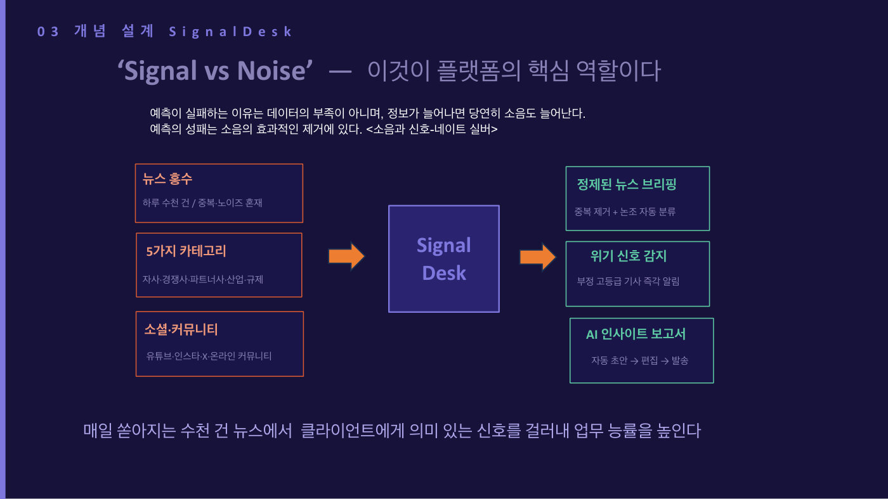

홍보 회사 직원(AE, 고객 기업의 언론 홍보를 대신해 주는 담당자)의 10가지 업무 중 5개는 매일 똑같이 반복된다. 아침마다 고객 관련 뉴스를 검색해 복사·붙여넣기로 정리하는 데 2~3시간, 한국어와 영어로 보고서를 써서 보내는 데 2~4시간이 들고, 실시간 뉴스 시대라 이 보고가 아침 9시부터 저녁 6시까지 이어진다. 입사 1~3년차 직원 업무의 절반이 이런 반복 작업에 소진된다. 특히 고객사인 넷플릭스는 관련 기사가 하루 4,000건씩 쏟아지는데, 이걸 사람이 다 읽고 뭐가 중요한지 판단하다 보면 정작 중요한 일, 즉 위기 대응 판단이나 기자와의 관계 관리, 고객에게 통찰을 주는 일을 할 시간이 없어진다.
발표자의 전략은 독특하다. AI로 뭔가를 더 만드는 게 아니라, 경쟁사와 차이가 나지 않는 반복 업무를 AI에 넘겨 "버리는" 것이 목적이다. 이론적 바탕은 통계학자 네이트 실버의 책 「신호와 소음」인데, 예측의 성패는 데이터의 양이 아니라 소음(불필요한 정보)을 얼마나 잘 걸러내느냐에 달려 있다는 것이다. 그래서 하루 4,000건의 기사를 20~30개의 핵심 신호로 압축해 주는 시스템 SignalDesk를 만들었다. 네이버 뉴스 API(뉴스를 자동으로 받아오는 통로)로 기사를 모으고, 구글의 AI인 Gemini가 기사 하나마다 중요도(1~5단계), 논조(긍정·중립·부정), 카테고리, 핵심 키워드, 긴급 여부의 5가지를 동시에 판별하며, 비슷한 기사는 자동으로 묶어서 보여준다. 기획은 직접 하고 개발은 외주를 줘서 총 약 1천만 원에 완성했는데, 비슷한 기능의 상용 소프트웨어는 3개월에 500만 원을 받는다.
지금은 OTT, 커피 브랜드, 자동차 부품, 외국계 IT까지 4개의 글로벌 고객사를 대상으로 시범 운영 중이고, 발표에서 실제 화면을 직접 시연하기도 했다. 반복 업무에서 풀려난 직원들은 AI가 절대 못 하는 일, 즉 사람을 만나고 맥락을 해석하고 전략을 세우는 전문가의 일에 집중하게 된다. 뉴스를 "찾는" 사람이 뉴스를 "해석하는" 사람이 되고, 회사는 단순 대행사에서 컨설팅 회사로 격이 올라간다는 구상이다. 나아가 발표자는 AI 스타트업의 어려운 기술을 쉬운 언어로 알리는 전문 홍보 사업을 새로 시작했고, 우리나라가 AI 모델 개발 경쟁 대신 "AI를 가장 잘 쓰는 나라"로 가자는 소버린 AI 2.0 국가 캠페인도 기획하고 있다. "뭐든지 시작했다는 게 제일 중요하다"는 것이 그의 결론이다.